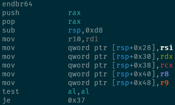
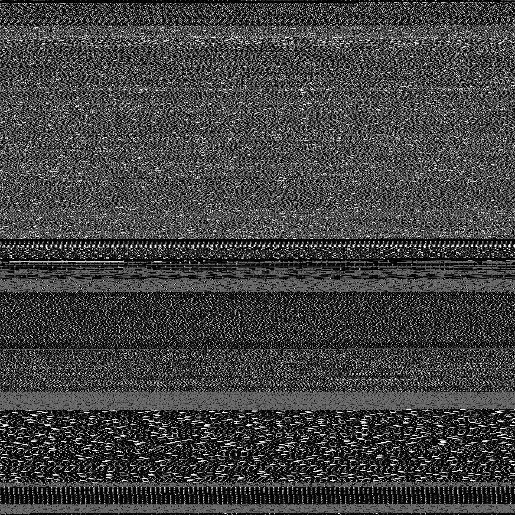

We're working on bringing you some awesome stuff!
Gravity Moth is working on bringing powerful new debugging tools to Linux!
We're not ready for a launch quite yet, there's still quite a lot left to do. I'm tired of fighting with my tools, this stuff is as much for my sake as it is for all of you. The better the tools get, the faster the process of iterating on them should go, so I'm hopeful we'll have some fun stuff available soon.
Sneak Peek
Debugging Should Be Legible
Why don't we have syntax highlighting for assembly? We use syntax highlighting in many higher-level languages daily, to make it easier to quickly scan and follow code flow. It's time to bring disassemblers up to speed with modern, 80s technology.
History Matters
When dissecting real catastrophes, inspectors build out a timeline and attempt to retrace footsteps. Debugging code should work the same way. We track the how your program changes registers and memory as it runs, save all your syscalls, and allow you to replay your code exactly the way it failed, so you can reliably walk backwards from the problem to find the cause.
Data Has A Shape
Real data has striations, character, and personality. Really understanding a problem might require a new way of looking at your code or your dataset. We try to provide the tools to visualize your problem in a handful of new, unique ways, to help you build strong intuition about your problems. This is a real ELF binary with large static tables of content, plainly visible when displayed as a greyscale image.
